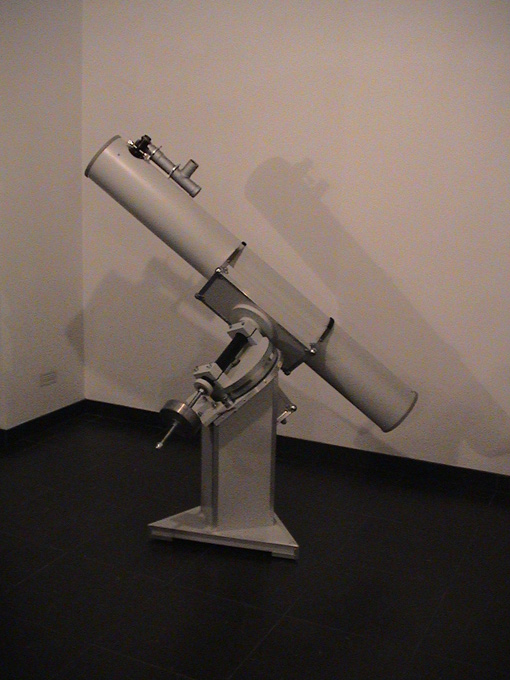
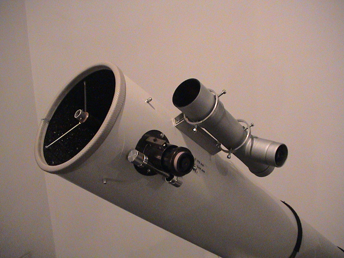
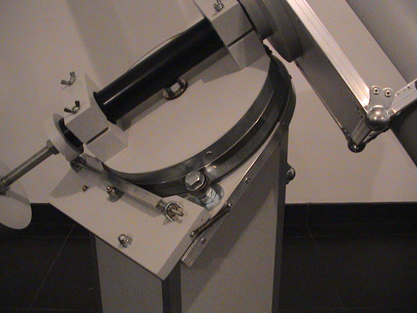
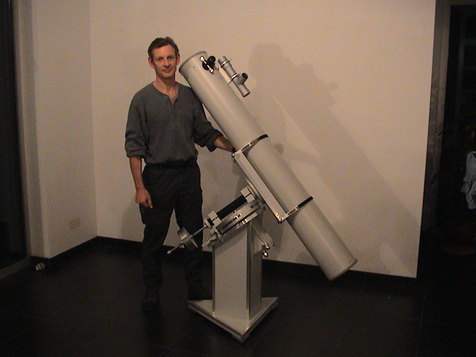

Telescope building

This is the telescope I built myself
About 20 years ago I started a new hobby: astronomy. At the time, I took several courses at popular observatory Urania. One of them was the course in telescope making. Here we learned to build our own telescope. It became a Newtonian 170 mm / F 8 system on an equatorial mount. Everything was self-made: the mount, the tube and the optics. Indeed, the main mirror was ground by hand. Later I helped to make telescopes for the youth work of Urania.



With this device I spent many hours studying the night sky. Currently, I am no longer very active in observing celestial objects.


Copyright © Geert Moris - Averbode - 2021 .